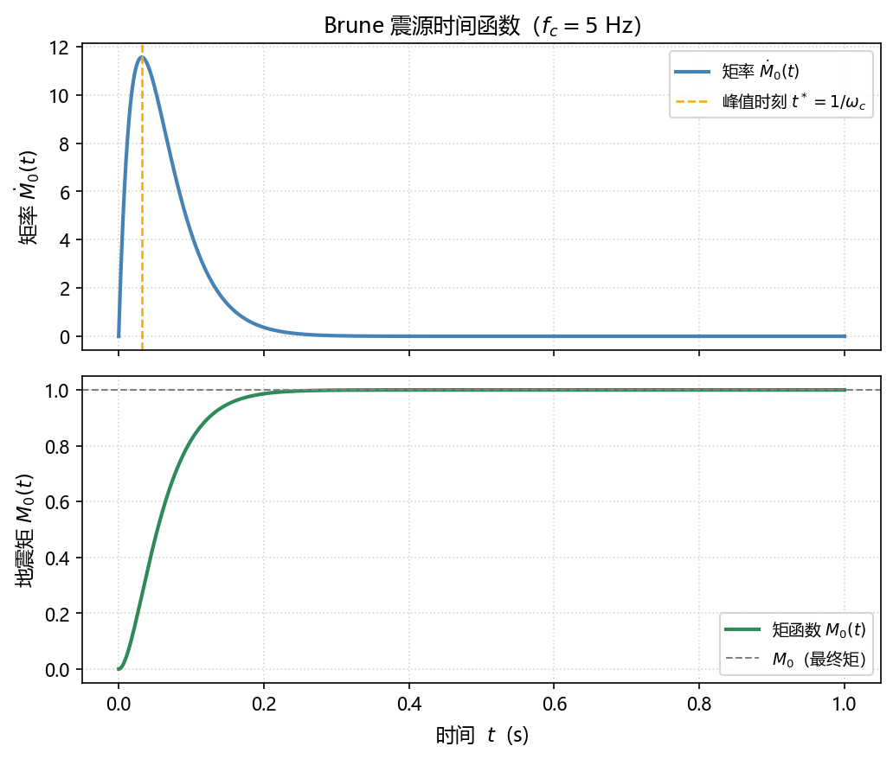
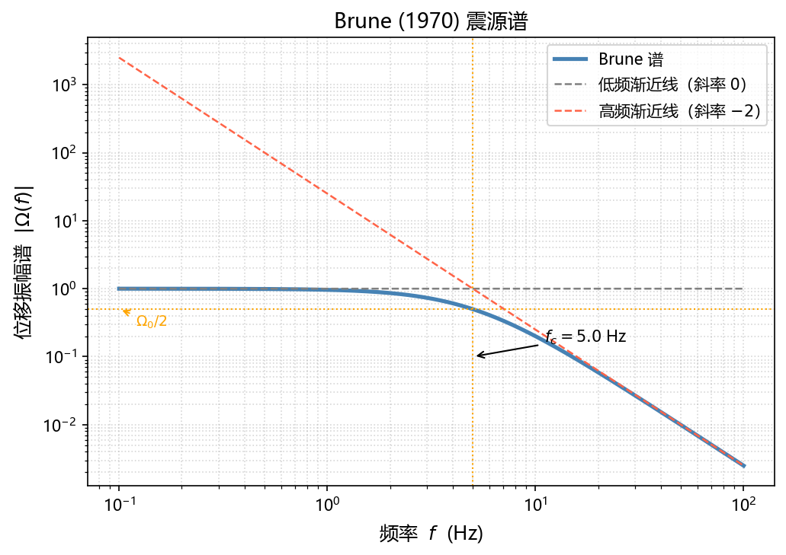
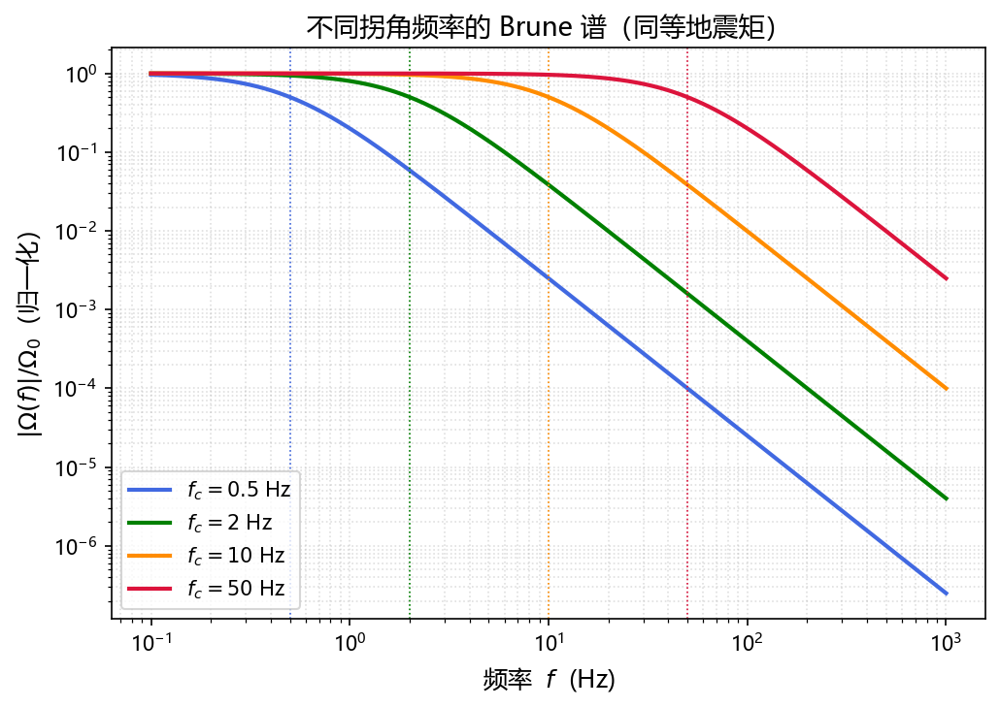

Brune Source Spectrum Model¶
Introduction¶
The Brune model, proposed by Brune (1970, 1971), is the most widely used source spectrum model in seismology. It simplifies fault rupture as an instantaneous stress drop on a circular crack, describing far-field radiated displacement with just a few parameters — seismic moment \(M_0\), corner frequency \(f_c\), and stress drop \(\Delta\sigma\).
The model's core prediction is that the far-field S-wave displacement amplitude spectrum follows:
Flat at low frequencies, decaying as \(f^{-2}\) at high frequencies — hence the name \(\omega^{-2}\) model or omega-square model.
Physical Model¶
Basic Assumptions¶
| Assumption | Description |
|---|---|
| Circular fault | Fault plane is a circular crack of radius \(r\) |
| Instantaneous uniform stress drop | Full fault plane unloads simultaneously at \(t=0\); stress drop \(\Delta\sigma\) is constant |
| Infinite homogeneous medium | Velocity gradients and heterogeneity are neglected |
| Far-field approximation | Observation distance \(R \gg r\); only the radiation field is considered |
| S-wave dominant | Displacement spectrum is dominated by S-waves; P-waves have a similar form with different constants |
Source Geometry¶
The fault plane is a disk of radius \(r\) with area \(S = \pi r^2\). The seismic moment is determined by slip \(D\) and shear modulus \(\mu = \rho\beta^2\):
where \(\bar{D}\) is the average slip over the fault plane, \(\rho\) is medium density, and \(\beta\) is S-wave velocity.
Far-field Displacement and Seismic Moment¶
Far-field Displacement of a Point Source¶
For a point source, the far-field S-wave displacement is (Aki & Richards, 2002):
where:
- \(\mathcal{R}_{\theta\phi}\): S-wave radiation pattern coefficient
- \(R\): hypocentral distance
- \(\dot{M}_0(t)\): seismic moment rate (time derivative of seismic moment)
- \(t - R/\beta\): travel-time delay for S-wave propagation
Physical Meaning
Far-field displacement is proportional to the moment rate \(\dot{M}_0(t)\), not the moment \(M_0(t)\) itself. The moment rate reflects the velocity of fault slip — how fast the source radiates energy.
Frequency-Domain Expression¶
Taking the Fourier transform of both sides (the phase factor \(e^{-i\omega R/\beta}\) affects only phase, not amplitude):
Therefore, the shape of the amplitude spectrum is entirely determined by the Fourier transform of the moment rate \(|\dot{M}_0(\omega)|\).
Derivation of the Source Time Function¶
Moment Function and Moment Rate Function¶
Brune's physical picture: at \(t=0\), stress on the fault plane drops instantaneously and the fault slips freely. He argued that the moment function satisfies a critically damped oscillator response:
where \(H(t)\) is the Heaviside step function and \(\omega_c = 2\pi f_c\) is the corner angular frequency.
Verification of boundary conditions:
- At \(t = 0\): \(M_0(0) = M_0[1 - 1 \cdot 1] = 0\) ✓ (no slip before rupture)
- As \(t \to \infty\): \(e^{-\omega_c t} \to 0\), so \(M_0(\infty) = M_0\) ✓ (full seismic moment achieved)
The moment rate function is the time derivative of the moment function:
Derivation:
Therefore:
The moment rate starts at zero, peaks at \(t^* = 1/\omega_c\), then decays exponentially:
The figure below shows the time histories of moment rate and moment function for \(f_c = 5\,\text{Hz}\):

Fourier Transform of the Moment Rate Function¶
Taking the Fourier transform of \(\dot{M}_0(t) = M_0\,\omega_c^2\, t\, e^{-\omega_c t}\, H(t)\):
Using the Laplace integral \(\displaystyle\int_0^{+\infty} t\, e^{-at}\, dt = \frac{1}{a^2}\) with \(a = \omega_c + i\omega\):
Amplitude spectrum:
Dividing numerator and denominator by \(\omega_c^2\):
Brune Displacement Spectrum¶
Amplitude Spectrum¶
Substituting the moment rate spectrum into the far-field displacement spectrum:
Define the low-frequency plateau:
Then the displacement amplitude spectrum is:
or equivalently, in terms of frequency \(f\) (\(\omega = 2\pi f\), \(\omega_c = 2\pi f_c\)):
Asymptotic Behavior¶
Low frequencies (\(f \ll f_c\)):
The spectrum is flat; the plateau \(\Omega_0\) directly reflects \(M_0\).
High frequencies (\(f \gg f_c\)):
The spectrum decays as \(f^{-2}\) — the origin of the name "\(\omega^{-2}\) model".
At the corner (\(f = f_c\)):
Amplitude drops to half the plateau, corresponding to the \(-3\,\text{dB}\) point.
Log-log Spectral Slope¶
On a log-log plot:
- \(f \ll f_c\): slope \(\approx 0\) (horizontal)
- \(f \gg f_c\): slope \(\approx -2\) (drops 2 decades per decade of frequency)
- Inflection point at \(f_c\)
Low-frequency Plateau and Seismic Moment¶
Inversion Formula¶
Starting from the definition of the low-frequency plateau:
Solving for seismic moment:
Radiation Pattern Correction¶
In practice, the radiation pattern \(\mathcal{R}_{\theta\phi}\) varies with station azimuth. It is typically averaged over multiple stations or azimuths, and a free-surface amplification factor \(S_{\text{fs}}\) (usually 2) is applied:
where \(F\) is the azimuthally averaged radiation pattern value (≈ 0.63 for S-waves).
Practical Significance
Reading the low-frequency plateau \(\Omega_0\) (in m·s) from a spectrum, together with medium parameters and hypocentral distance, directly yields the seismic moment, and hence moment magnitude: \(M_w = \frac{2}{3}\log_{10}M_0 - 6.07\).
Corner Frequency and Source Dimension¶
Physical Derivation¶
Brune (1970) argued that the time for S-waves to traverse the fault (the rupture rise time) determines the corner frequency:
For a circular fault of radius \(r\), the S-wave travel time across the fault is approximately:
Therefore the corner frequency scales as:
Through a more rigorous radiation field calculation, Brune (1970) obtained the precise coefficient:
or equivalently:
The constant \(k\) differs slightly across studies:
| Source | Wave type | \(k\) |
|---|---|---|
| Brune (1970) | S-wave | 0.37 |
| Madariaga (1976) | S-wave | 0.21 |
| Madariaga (1976) | P-wave | 0.32 |
Important
Different references use different \(k\) values. When computing stress drop, the \(k\) value must be consistent throughout; they cannot be mixed.
Source Radius and Moment Magnitude¶
When stress drop is approximately constant (\(\Delta\sigma \sim 1\text{--}10\,\text{MPa}\)), a larger seismic moment implies a larger source radius and lower corner frequency:
Stress Drop¶
Circular Crack Theory (Eshelby 1957)¶
For a circular crack in a homogeneous elastic medium, Eshelby (1957) gives the slip distribution under uniform stress drop \(\Delta\sigma\):
where \(\xi\) is the radial distance from the fault center.
Calculation of Mean Slip¶
Integrating over the fault area to find the mean slip:
Evaluating the inner integral with substitution \(u = r^2 - \xi^2\), \(du = -2\xi\,d\xi\):
Substituting back:
Derivation of Stress Drop from Seismic Moment¶
Solving for stress drop:
Expression in Terms of Observables¶
Substituting \(r = k\beta/f_c\):
With Brune (1970)'s \(k = 0.37\), \(k^3 = 0.0507\):
This is the practical formula: given seismic moment \(M_0\), corner frequency \(f_c\), and S-wave velocity \(\beta\), stress drop can be estimated directly.
Typical Values¶
Crustal earthquake stress drops typically fall in the range:
Most tectonic earthquakes cluster around \(1\text{--}10\,\text{MPa}\), with a weak dependence on seismic moment — evidence of earthquake self-similarity: earthquakes of different sizes share similar stress drops.
Network of Parameter Relationships¶
The three core parameters \(M_0\), \(f_c\), \(\Delta\sigma\) are mutually constrained:
Given any two, the third can be derived — the basis of source parameter inversion.
Python Examples¶
Plotting the Brune Displacement Spectrum¶
import numpy as np
import matplotlib.pyplot as plt
def brune_spectrum(f, omega0, fc):
"""
Brune (1970) displacement amplitude spectrum
Parameters
----------
f : frequency array (Hz)
omega0 : low-frequency plateau (m·s)
fc : corner frequency (Hz)
Returns
-------
amplitude spectrum array
"""
return omega0 / (1 + (f / fc) ** 2)
# Parameters
f = np.logspace(-1, 2, 2000) # 0.1 ~ 100 Hz
omega0 = 1.0 # low-frequency plateau (normalized)
fc = 5.0 # corner frequency 5 Hz
spec = brune_spectrum(f, omega0, fc)
# Asymptotes
low_freq_asymptote = np.full_like(f, omega0)
high_freq_asymptote = omega0 * (fc / f) ** 2
# Plot
fig, ax = plt.subplots(figsize=(7, 5))
ax.loglog(f, spec, lw=2.5, color='steelblue', label='Brune spectrum')
ax.loglog(f, low_freq_asymptote, lw=1, color='gray', ls='--', label='Low-freq asymptote (slope 0)')
ax.loglog(f, high_freq_asymptote, lw=1, color='tomato', ls='--', label=r'High-freq asymptote (slope $-2$)')
ax.axvline(x=fc, color='orange', lw=1, ls=':')
ax.axhline(y=omega0 / 2, color='orange', lw=1, ls=':')
ax.annotate(f'$f_c = {fc}$ Hz', xy=(fc, omega0/10),
xytext=(fc*2, omega0/6), fontsize=10,
arrowprops=dict(arrowstyle='->', color='k'))
ax.set_xlabel('Frequency $f$ (Hz)', fontsize=12)
ax.set_ylabel(r'Displacement spectrum $|\Omega(f)|$', fontsize=12)
ax.set_title('Brune (1970) Source Spectrum', fontsize=13)
ax.legend(fontsize=10)
ax.grid(True, which='both', ls=':', alpha=0.5)
plt.tight_layout()
plt.show()

Comparing Multiple Corner Frequencies¶
import numpy as np
import matplotlib.pyplot as plt
f = np.logspace(-1, 3, 3000)
fc_list = [0.5, 2, 10, 50] # Hz
colors = ['royalblue', 'green', 'orange', 'crimson']
fig, ax = plt.subplots(figsize=(7, 5))
for fc, color in zip(fc_list, colors):
spec = 1.0 / (1 + (f / fc) ** 2)
ax.loglog(f, spec, lw=2, color=color, label=f'$f_c = {fc}$ Hz')
ax.axvline(x=fc, color=color, lw=0.8, ls=':')
ax.set_xlabel('Frequency $f$ (Hz)', fontsize=12)
ax.set_ylabel(r'$|\Omega(f)| / \Omega_0$ (normalized)', fontsize=12)
ax.set_title('Brune spectra for different corner frequencies (same $M_0$)', fontsize=13)
ax.legend(fontsize=10)
ax.grid(True, which='both', ls=':', alpha=0.4)
plt.tight_layout()
plt.show()

Computing Source Parameters from Spectral Measurements¶
import numpy as np
def compute_source_params(omega0, fc, R,
rho=2700, beta=3500,
F=0.63, S_fs=2.0, k=0.37):
"""
Compute source parameters from Brune spectral measurements.
Parameters
----------
omega0 : low-frequency plateau (m·s)
fc : corner frequency (Hz)
R : hypocentral distance (m)
rho : density (kg/m^3), default 2700
beta : S-wave velocity (m/s), default 3500
F : mean radiation pattern, default 0.63
S_fs : free-surface amplification, default 2.0
k : Brune constant, default 0.37
Returns
-------
dict: M0 (N·m), Mw, r (m), delta_sigma (Pa)
"""
M0 = 4 * np.pi * rho * beta**3 * R * omega0 / (F * S_fs)
Mw = (2/3) * np.log10(M0) - 6.07
r = k * beta / fc
delta_sigma = (7/16) * M0 / r**3
return {"M0": M0, "Mw": Mw, "r": r, "delta_sigma": delta_sigma}
# Example
result = compute_source_params(
omega0=1e-8, # m·s
fc=5.0, # Hz
R=100e3, # 100 km
)
print(f"Seismic moment M0 = {result['M0']:.3e} N·m")
print(f"Moment magnitude Mw = {result['Mw']:.2f}")
print(f"Source radius r = {result['r']:.0f} m")
print(f"Stress drop Δσ = {result['delta_sigma']/1e6:.2f} MPa")
Corrections in Practice¶
The ideal Brune spectrum must be corrected for several effects before it can be compared with recorded seismograms.
Path Effects¶
Geometric Spreading: Body wave amplitude decays as \(1/R\), already included in the formula.
Anelastic Attenuation: The medium quality factor \(Q\) causes exponential amplitude decay with propagation distance:
where \(t^* = R/(\beta Q)\) is the attenuation operator.
High-frequency Cutoff (κ Attenuation)¶
Observed spectra often show a steeper rolloff above some frequency \(f_{\max}\), described by the parameter \(\kappa\) (kappa):
\(\kappa\) mainly reflects attenuation in the shallow low-\(Q\) layer and is a station property (\(\approx 10\text{--}100\,\text{ms}\)).
Complete Observed Spectrum Model¶
Combining all corrections, the observed amplitude spectrum is:
where \(I(f)\) is the inverse instrument response (instrument correction term).
Site Effects¶
Near-surface soft sediments amplify ground motion and must be corrected empirically. Common methods include the horizontal-to-vertical spectral ratio (HVSR) or reference-site approaches.
Extended and Alternative Models¶
Boatwright (1980) Model¶
Changes the high-frequency decay to a steeper \(f^{-4}\):
- High-frequency decay \(\propto f^{-2}\) (same as Brune)
- Sharper spectral corner
- Better suited to some short-period radiation characteristics
Madariaga (1976) Dynamic Rupture Model¶
Based on numerical simulations of fault dynamics, gives separate corner frequencies for P and S waves:
where \(\alpha\) is the P-wave velocity. P and S corner frequencies differ; their ratio is approximately 1.5.
Double Corner Frequency Model¶
For complex rupture processes, two corner frequencies \(f_1 < f_2\) are introduced:
Applicable to: multi-segment rupture, slow-slip events, secondary stress-drop processes.
Model Comparison¶
| Model | High-freq slope | Key feature |
|---|---|---|
| Brune (1970) | \(-2\) | Simplest; most widely used |
| Boatwright (1980) | \(-2\) | Sharper corner |
| Madariaga (1976) | \(-2\) | Separate P/S corner frequencies |
| \(\omega^{-3}\) model | \(-3\) | Suited to some deep earthquakes |
| Double corner frequency | \(-2\) | Multi-segment rupture |
References¶
Brune, J. N. (1970). Tectonic stress and the spectra of seismic shear waves from earthquakes. Journal of Geophysical Research, 75(26), 4997–5009.
Brune, J. N. (1971). Correction. Journal of Geophysical Research, 76, 5002.
Aki, K. (1967). Scaling law of seismic spectrum. Journal of Geophysical Research, 72(4), 1217–1231.
Eshelby, J. D. (1957). The determination of the elastic field of an ellipsoidal inclusion, and related problems. Proceedings of the Royal Society of London, 241(1226), 376–396.
Madariaga, R. (1976). Dynamics of an expanding circular fault. Bulletin of the Seismological Society of America, 66(3), 639–666.
Boatwright, J. (1980). A spectral theory for circular seismic sources: simple estimates of source dimension, dynamic stress drop, and radiated seismic energy. Bulletin of the Seismological Society of America, 70(1), 1–27.
Aki, K., & Richards, P. G. (2002). Quantitative Seismology (2nd ed.). University Science Books.